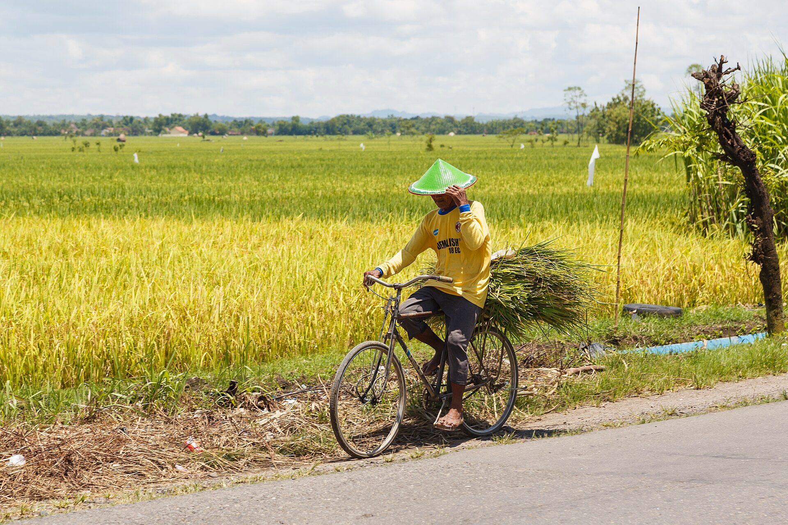
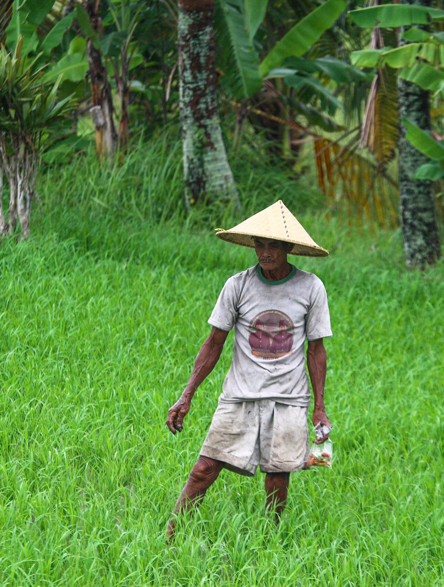
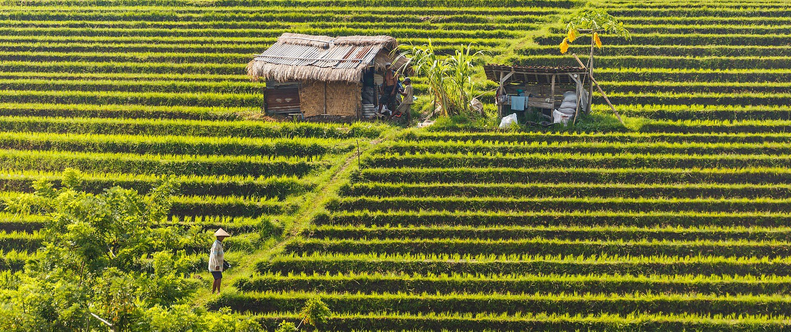

<title>NusaHarvest</title>
<style>:root{--accent:#B45309;--brand:#B45309}</style>
<svg id="brandmark" hidden viewBox="0 0 40 40"><rect width="40" height="40" rx="10" fill="#B45309"/><g transform="translate(8 8)" fill="none" stroke="#fff" stroke-width="2.4" stroke-linecap="round" stroke-linejoin="round"><path d="M12 21v-9"/><path d="M12 12c0-4 3-6 7-6 0 4-3 6-7 6zM12 14c0-3-2.5-5-6-5 0 3 2.5 5 6 5z"/></g></svg>
<section class="brand media">
  <div class="logo"></div>
  <div class="fill">
    <h1>NusaHarvest lends to farmers and pays claims from BMKG rainfall data</h1>
    <p class="lede">Pinjaman dan asuransi panen untuk petani koperasi · tahap pilot</p>
  </div>
  <figure class="pic"><figcaption class="credit">Petani di Indonesia · Foto: CEphoto, Uwe Aranas, CC BY-SA 3.0, Wikimedia Commons</figcaption></figure>
  <aside class="notes">NusaHarvest menghubungkan pemodal dengan petani koperasi. Petani dapat pinjaman modal tanam, dan asuransi panennya cair otomatis kalau data curah hujan BMKG menunjukkan gagal panen. Pemodal dilindungi tiga lapis sebelum uangnya tersentuh.</aside>
</section>
<section class="media">
  <div class="eyebrow">Masalah</div>
  <h2><em>Satu dari tiga</em> usaha tani terhambat modal</h2>
  <div class="cols" style="--max:60">
    <div style="--v:55.03;--d:0"><b>55,03%</b><i></i><span>Hama, penyakit</span></div>
    <div class="hi" style="--v:34.82;--d:1"><b>34,82%</b><i></i><span>Modal</span></div>
  </div>
  <p class="source">Source: BPS Survei Ekonomi Pertanian 2024, usaha tani perorangan yang menyebut hambatan, via GoodStats [N1] [N2]</p>
  <figure class="pic"><figcaption class="credit">Petani di sawah, Bali, 2020 · Foto: Tiket2, CC BY 2.0, Wikimedia Commons</figcaption></figure>
  <aside class="notes">Angka ini dari survei BPS, bukan dari kami. Hama nomor satu, modal menyusul: sepertiga petani sudah tahu apa yang mereka butuhkan dan tidak mendapatkannya. Ada 40,69 juta orang bekerja di pertanian, menurut UGM [N3].</aside>
</section>
<section>
  <div class="eyebrow">Kenapa bank menolak</div>
  <h2>Hama dan cuaca membuat pinjaman petani terlihat terlalu berisiko</h2>
  <table class="t rv" style="font-size:24px">
    <tr><th>Risiko</th><th>Ditanggung oleh</th><th>Cara klaim cair</th></tr>
    <tr><td><svg class="ico" style="vertical-align:-7px;margin-right:12px"><use href="#i-alert"/></svg>Hama dan penyakit [N2]</td><td>AUTP Jasindo</td><td>Survei kerusakan di lahan, berminggu-minggu</td></tr>
    <tr class="hi"><td><svg class="ico" style="vertical-align:-7px;margin-right:12px"><use href="#i-rain"/></svg>Kekeringan dan banjir</td><td>Indeks curah hujan BMKG</td><td>Otomatis saat ambang terlewati</td></tr>
  </table>
  <p class="source">Source: BPS Survei Ekonomi Pertanian 2024, via GoodStats [N2]; NusaHarvest, rencana produk</p>
  <aside class="notes">Kami sebut ini terang-terangan. Asuransi indeks cuaca tidak menanggung hama. Karena itu setiap pinjaman kami wajib dipasangkan dengan AUTP dari Jasindo yang menanggung hama, dan indeks BMKG untuk kekeringan dan banjir.</aside>
</section>
<section>
  <div class="eyebrow">Produk</div>
  <h2>Klaim cair <em>tanpa survei lapangan</em> saat curah hujan melewati ambang</h2>
  <div class="flow rv">
    <div><svg class="ico"><use href="#i-users"/></svg><b>Koperasi</b><span>Menyalurkan pinjaman modal tanam</span></div><em>→</em>
    <div><svg class="ico"><use href="#i-rain"/></svg><b>Data BMKG</b><span>Oracle membaca curah hujan</span></div><em>→</em>
    <div class="hi"><svg class="ico"><use href="#i-alert"/></svg><b>Ambang lewat</b><span>Klaim dibayar otomatis</span></div><em>→</em>
    <div><svg class="ico"><use href="#i-check"/></svg><b>Solana</b><span>Penyaluran dan klaim tercatat</span></div>
  </div>
  <aside class="notes">Petani tidak perlu mengisi formulir klaim. Oracle membaca data BMKG, dan kalau ambang terlewati, klaim dibayar ke rekening pinjaman lebih dulu. Pemodal bisa melihat setiap transaksi di explorer.</aside>
</section>
<section>
  <div class="eyebrow">Perlindungan pemodal</div>
  <h2>Pemodal kehilangan uang hanya kalau tiga lapis habis</h2>
  <div class="layers rv">
    <div><svg class="ico"><use href="#i-shield"/></svg><div><b>1. Asuransi</b><br><span>Wajib per pinjaman</span></div><em>kerugian masuk di sini</em></div>
    <div><svg class="ico"><use href="#i-bank"/></svg><div><b>2. Penjaminan</b><br><span>Rencana: lewat koperasi penyalur KUR [N5]</span></div><em>lalu di sini</em></div>
    <div><svg class="ico"><use href="#i-wallet"/></svg><div><b>3. Cadangan</b><br><span>20% dana pool, rencana</span></div><em>lalu di sini</em></div>
    <div class="base"><svg class="ico"><use href="#i-coin"/></svg><div><b>Dana pemodal</b><br><span>Tersentuh hanya kalau tiga lapis di atas habis</span></div><em></em></div>
  </div>
  <p class="source">Source: Jamkrindo, Penjaminan KUR [N5]; urutan lapis adalah rencana tim</p>
  <aside class="notes">Urutan ini penting. Asuransi membayar lebih dulu, lalu penjaminan, baru cadangan. Kami belum punya perjanjian dengan Askrindo atau Jamkrindo. Rencananya pinjaman disalurkan lewat koperasi yang layak KUR, karena KUR sudah dijamin perusahaan penjamin. Itu rencana, bukan kemitraan, dan kami akan bilang begitu kalau juri bertanya.</aside>
</section>
<section>
  <div class="eyebrow">Model bisnis</div>
  <h2>Petani membayar 6%, pemodal menerima 5%, <em>platform 1%</em></h2>
  <div style="margin:auto 0">
    <div class="stack rv">
      <div style="--w:5;--d:0"><b>5%</b><span>ke pemodal</span></div>
      <div class="hi" style="--w:1;--d:1"><b>1%</b><span>platform</span></div>
    </div>
    <div class="scale"><span>0%</span><span>bunga yang dibayar petani per tahun</span><span>6%</span></div>
    <div class="cards" style="margin-top:36px">
      <div class="hi" style="min-height:0"><b>+ 15% dari premi</b><span>biaya administrasi polis, pendapatan kedua</span></div>
      <div style="min-height:0"><b>Tanpa biaya deposit</b><span>dan dana klaim tidak diputar di DeFi</span></div>
    </div>
  </div>
  <p class="source">Source: NusaHarvest, rencana tarif, bukan data luar</p>
  <aside class="notes">Ini rencana tarif kami sendiri, bukan data luar. Dari enam persen bunga, lima ke pemodal dan satu ke platform. Kami sengaja membuang biaya deposit 2,5% dan hasil DeFi dari dana asuransi di deck lama. Dana klaim petani tidak boleh diputar di DeFi.</aside>
</section>
<section>
  <div class="eyebrow">Pasar</div>
  <h2>Tujuh belas juta petani gurem menggarap kurang dari setengah hektar</h2>
  <div class="split">
    <div><div class="kpis" style="grid-auto-flow:row;gap:26px">
      <div><b>40,69 jt</b><span>orang bekerja di pertanian [N3]</span></div>
      <div class="hi"><b>17,25 jt</b><span>petani gurem, lahan di bawah 0,5 ha [N4]</span></div>
    </div></div>
    <div class="rings">
      <div style="width:340px;height:340px"><div><b>40,69 juta</b><span>pekerja pertanian</span></div></div>
      <div style="width:225px;height:225px"><div><b>17,25 juta</b><span>petani gurem</span></div></div>
      <div class="hi" style="width:120px;height:120px"><div><b>1</b><span>koperasi pilot</span></div></div>
    </div>
  </div>
  <p class="source">Sumber: UGM, 2024 [N3]; BPS, Sensus Pertanian 2023 [N4]; pilot adalah rencana tim</p>
  <aside class="notes">Angka ini dari Sensus Pertanian 2023 BPS: 17,25 juta petani gurem [N4], lahannya di bawah setengah hektar. Mereka yang paling sulit dapat pinjaman bank. Ini bukan pasar yang langsung kami layani. Kami mulai dari satu koperasi pilot, lalu lima, dan angka nasional ini menunjukkan ruang tumbuhnya.</aside>
</section>
<section class="media">
  <div class="eyebrow">Rencana</div>
  <h2>Satu koperasi di semester satu, lima di akhir tahun</h2>
  <div class="tl rv">
    <div class="hi"><svg class="ico"><use href="#i-sprout"/></svg><b>Q1–Q2</b><span>Pilot satu koperasi padi</span></div>
    <div><svg class="ico"><use href="#i-users"/></svg><b>Q3–Q4</b><span>Lima koperasi</span></div>
    <div><svg class="ico"><use href="#i-flag"/></svg><b>Lalu</b><span>Kopi dan kakao</span></div>
  </div>
  <p class="source">Source: NusaHarvest, rencana tim</p>
  <figure class="pic"><figcaption class="credit">Sawah di Tabanan, Bali · Foto: CEphoto, Uwe Aranas, CC BY-SA 3.0, Wikimedia Commons</figcaption></figure>
  <aside class="notes">Ukuran sukses pilot: berapa pinjaman tersalur, tingkat pengembalian, dan satu klaim BMKG yang cair otomatis.</aside>
</section>
<section>
  <div class="eyebrow">Tim</div>
  <h2>Empat orang yang sudah membangun di Web3 dan DeFi</h2>
  <div class="cards rv">
    <div class="hi"><svg class="ico"><use href="#i-user"/></svg><b>Evander Franklin</b><span>Empat tahun di DeFi, ex-CCO agensi digital</span></div>
    <div><svg class="ico"><use href="#i-code"/></svg><b>Vincentius Bryan Kwandou</b><span>Engineering</span></div>
    <div><svg class="ico"><use href="#i-chip"/></svg><b>Azmi Maulana</b><span>Infrastruktur</span></div>
    <div><svg class="ico"><use href="#i-chart"/></svg><b>Raisha Al Fadhila Putri</b><span>Bisnis</span></div>
  </div>
  <aside class="notes">Belum ada orang asuransi atau pertanian di tim. Kami cari penasihat dari koperasi pilot dan dari industri asuransi.</aside>
</section>
<section>
  <div class="eyebrow">Permintaan</div>
  <h2>Kami mencari satu koperasi dan satu mitra asuransi untuk pilot</h2>
  <table class="t rv">
    <tr><th>Yang kami cari</th><th>Perannya di pilot</th><th>Kontak yang membantu</th></tr>
    <tr class="hi"><td>Satu koperasi tani</td><td>Anggota ikut, data lahan</td><td>Pengurus koperasi</td></tr>
    <tr class="hi"><td>Satu mitra asuransi</td><td>Menanggung risiko hama</td><td>Jasindo atau Askrindo</td></tr>
    <tr><td>Data cuaca</td><td>Pemicu indeks kekeringan</td><td>BMKG, sudah publik</td></tr>
  </table>
  <p class="source">Sumber: rencana tim, bukan data luar · nusaharvest.vercel.app</p>
  <aside class="notes">Permintaan kami spesifik. Kalau Anda mengenal pengurus koperasi atau orang di Jasindo atau Askrindo, itu yang paling membantu kami sekarang.</aside>
</section>
